Pacientes aguardam meses entre a solicitação da mamografia e o resultado, perdendo a janela crítica de tratamento precoce.
Mulheres com BI-RADS 4 e 5 (alto risco) não retornam para acompanhamento, aumentando mortalidade evitável.
SISCAN, eSaúde e outros sistemas não conversam entre si, impossibilitando visão completa da jornada da paciente.
Gestores tomam decisões baseadas em planilhas estáticas e relatórios defasados, enquanto pacientes de alto risco passam despercebidas pelo sistema.
Uma plataforma que transforma dados brutos do SISCAN em inteligência acionável, permitindo:
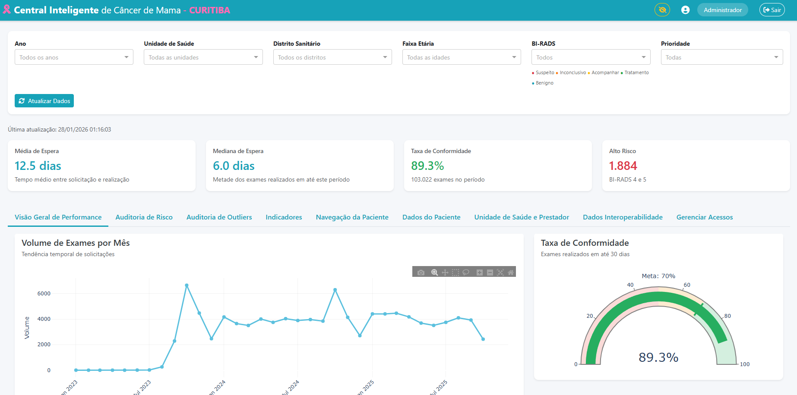
Painel unificado para toda a rede de atenção
Visualize todo o histórico de uma paciente: desde o primeiro exame até o mais recente, com evolução do BI-RADS, tempos de espera e unidades de atendimento.
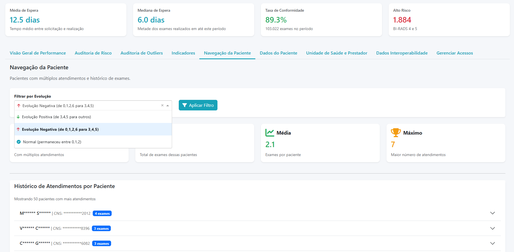
Filtros por evolução do BI-RADS
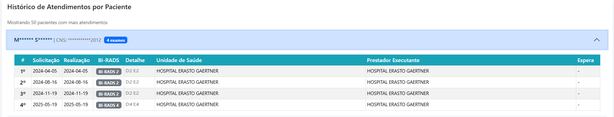
Histórico completo de atendimentos
Identifica pacientes que melhoraram (BI-RADS 3,4,5 → 0,1,2)
Alerta pacientes que pioraram (BI-RADS 0,1,2 → 3,4,5)
Sistema de classificação baseado no Protocolo Manchester adaptado para oncologia mamária
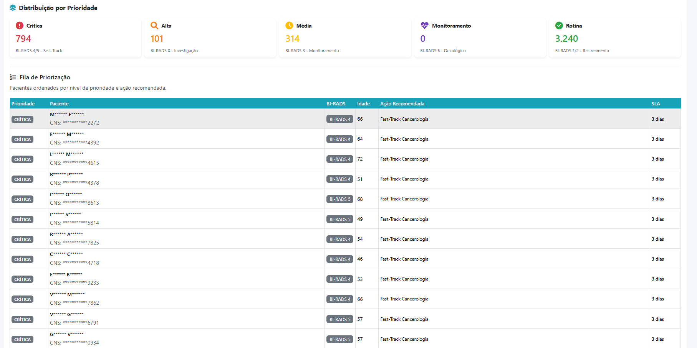
Fila de priorização com SLA e ação recomendada
BI-RADS 5 (altamente suspeito)
SLA: 24 horas
BI-RADS 4 (suspeito)
SLA: 72 horas
BI-RADS 0 (inconclusivo)
SLA: 7 dias
Com um clique, exporte a lista de pacientes de alto risco (BI-RADS 4 e 5) com dados de contato para que as equipes de saúde realizem busca ativa imediata.
Processamento de +100.000 registros do SISCAN cruzados com dados do eSaúde:
Por que isso importa?
Garante que nenhuma paciente fique "invisível" por estar em apenas um sistema.
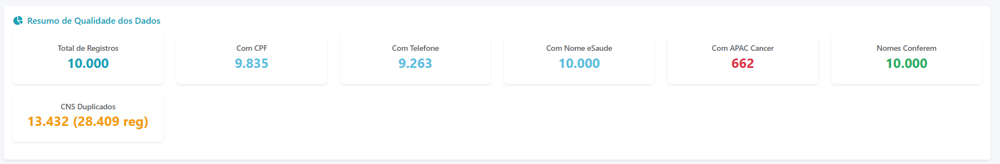
Resumo de qualidade e integridade dos dados
10 indicadores organizados em 4 blocos estratégicos
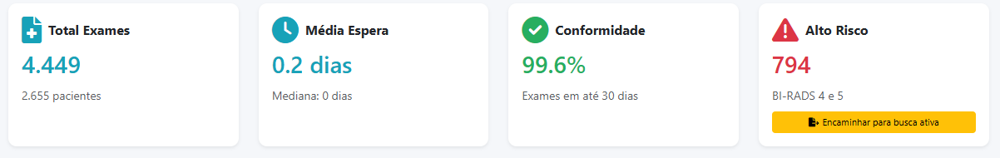
Visão geral: Total de Exames, Média de Espera, Conformidade e Alto Risco
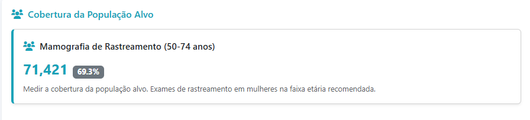
Cobertura da População Alvo (50-74 anos)
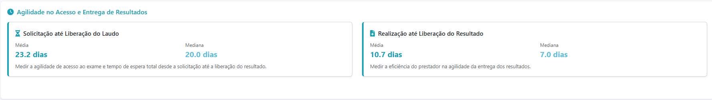
Agilidade no Acesso e Entrega de Resultados
Cada indicador possui meta definida e comparativo histórico, permitindo acompanhar a evolução da rede ao longo do tempo.
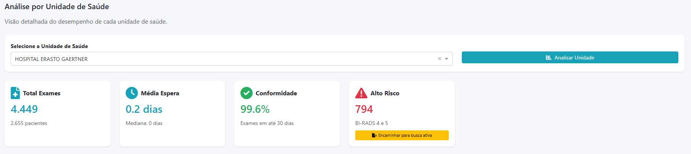
Seleção de unidade com KPIs específicos e botão de busca ativa
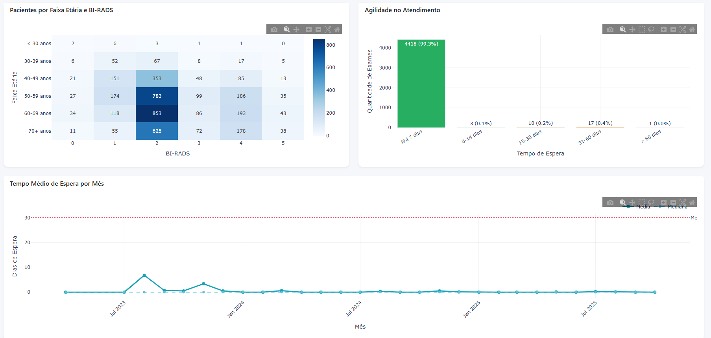
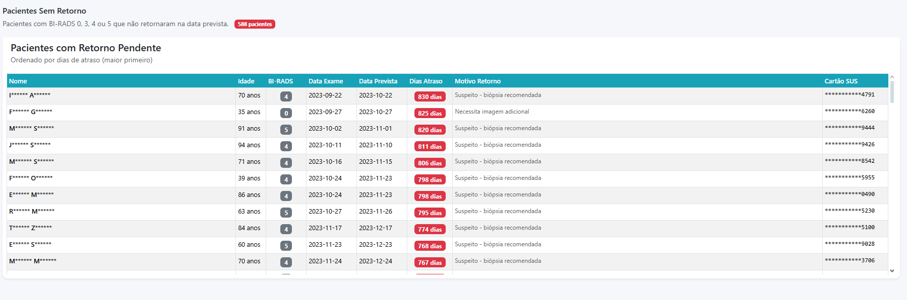
Fila de pacientes com retorno pendente ordenada por dias de atraso
Visualização da distribuição das pacientes para planejamento de campanhas.
99.3% dos exames em até 7 dias - histograma de tempos de espera.
Evolução do tempo médio de espera com meta de 30 dias demarcada.
Pacientes BI-RADS 0, 3, 4 e 5 aguardando acompanhamento.
3 níveis hierárquicos: Secretaria, Distrito e Unidade, cada um com visão restrita ao seu escopo.
Nomes, CPF, CNS e telefones são mascarados por padrão, protegendo a privacidade das pacientes.
Senhas criptografadas, timeout de sessão e fluxo completo de recuperação de senha.
O sistema foi projetado com privacidade desde a concepção (Privacy by Design), garantindo que dados sensíveis de saúde sejam tratados conforme a legislação brasileira.
"Não contamos exames. Acompanhamos vidas."
Predição de risco de não-retorno baseada em padrões históricos da paciente.
Notificações em tempo real para gestores quando pacientes de alto risco não retornam no prazo.
Aplicativo móvel para Agentes Comunitários de Saúde realizarem busca ativa em campo.
Modelo replicável para outros municípios e estados do Brasil via DATASUS.
Desenvolvido pela
Secretaria Municipal de Saúde de Curitiba